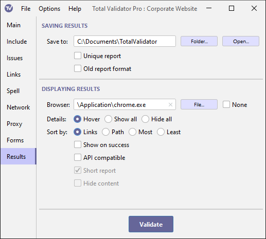

Documentation > Results options
These options specify where the results will be saved (first group), and how they will be displayed (second group)

Saving results
Save to
Normally results are saved to your documents folder. This can sometimes cause issues, or may be inconvenient.
Use this option to select an alternative folder to save to.
Enter the new path directly, or use the Folder button to select a different folder.
Note that if the folder doesn't already exist it will be ignored.
If you enter a new folder but later wish to go back to saving to the default location, leave this field blank.
The Open button will open the currently selected folder, so you can quickly get to
the results.
Unique report
Results are normally in a sub-folder named
Results, with the first page named TotalValidator.html,
and each time you run a test the old results are replaced.
Select the Unique report option to prevent previous results being overwritten.
The results will then be stored in a sub-folder named TVtimestamp,
where timestamp is in the format YYYYMMDDHHMMSS, so that
each set of results is stored separately.
Because results for the same web page are stored with the same name, you can compare the results with previous tests of the same website.
This option is often used with the Save to option to keep results safe for later inspection and comparison.
Old report format
Choose this option to generate the results in the old (pre 17.0) format.
Displaying results
Browser
Total Validator displays the results in your default browser at the end of a test run. It also launches your default browser when starting a DOM Validation.
On Windows and Linux systems, if you wish to use a specific browser, enter the path to the
executable, or use the File button to select it. On macOS just enter the name of the
browser, for example: Safari, Firefox, Google Chrome.
If you leave this field blank, or the browser you specify cannot be found, the results will be displayed using your default browser
None
If you do not wish your browser to display the results at the end of testing, select this option.
To view the results, you may then use the Last Results option in the File menu, or manually open the results stored in the Save to folder.
Details
On the page reports additional details are displayed
when you hover over the text of an issue. Instead, you can choose to click to display these details, with an initial default of Show all or Hide all.
You can set the default value of this option here if you have a specific preference you wish to use.
Sort by
On the summary report you can sort the results
in various ways using the Sort by option. You can set the default value of
this option here if you have a specific preference you wish to use.
Show on success
Normally pages with no issues are not reported. Use this option to report these pages. This can be useful if you are unsure as to what pages have been tested.
API compatible
This option is for users of the CI version, when making calls to the Web API. It allows the results produced by the Pro version to match those from the CI version. See the Web API documentation for further information.
Short report (old report format)
By default, the page reports display all the lines in a web page formatted so that you can quickly find where issues are and correct them. Use this option to display only the lines with issues on.
Note that you can still use the Short report checkbox on each page report to
view all of the lines again.
Hide content (old report format)
By default, page reports display the content as well as tags on the page. Use this option to hide the content of each web page. This may make it easier to locate and resolve issues.
Note that you can still use the Hide content checkbox on each page report to
view all of the content again. Also note that any content with Spell Check issues
will be always displayed.